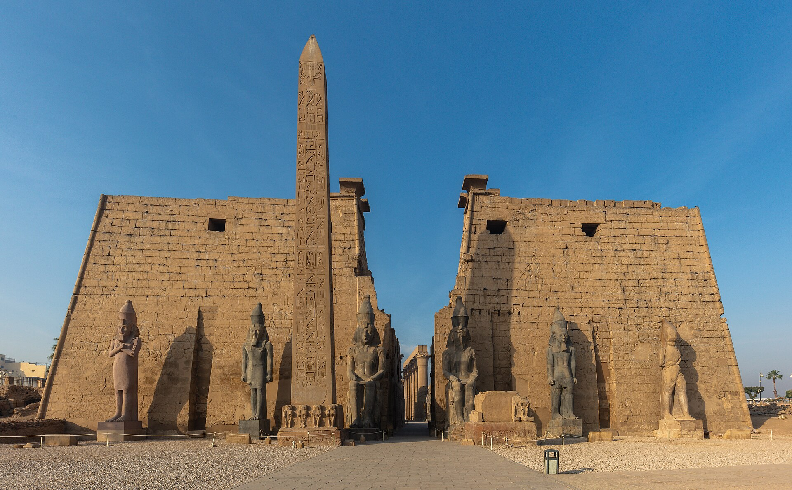

For students
- Delhi
- Cairo
- Luxor
- Delhi
- Cairo and the pyramids of Giza
- Overnight train to Luxor
- Luxor and Karnak temples, the Valley of the Kings
- A day of eclipse training before totality
- The total solar eclipse on 2 August
On 2 August 2027 the Moon covers the Sun over the temples of Thebes for more than six minutes, the longest totality on land between 1991 and 2114. Astrotourism takes students and travellers there from Delhi.
Both are built around the eclipse in Luxor and the temples of ancient Thebes. Both travel as a group from Delhi.

Outline plans. Day-by-day itineraries and prices are being finalised: ask on WhatsApp and we will send them as soon as they are ready.
The path of totality also crosses southern Spain and northern Morocco, where it lasts about 4½ minutes in the mid-morning. In Luxor it lasts nearly two minutes longer, with the Sun almost overhead in one of the driest skies on Earth.

6:23
Minutes of totality at greatest eclipse, beside Luxor: the longest on land between 1991 and 2114.
4:30
Minutes in southern Spain and northern Morocco, about, in the mid-morning.
Overhead
Almost: where the Sun stands in Luxor at totality, early in the afternoon.
<1 mm
Of rain in Luxor in a whole year. August skies are almost always clear.
The partial eclipse builds for over an hour, then the light goes in seconds. Times are counted from the moment totality begins.

−1:20:00
Eclipse glasses on.

−0:15:00
The air cools and the light turns sharp.

−0:00:10
The last sunlight breaks into beads.

0:00 to 6:23
Glasses off. The corona, the planets and a sunset on every horizon.
Then it all runs backwards: a second diamond ring, glasses straight back on, and the last of the Moon leaves the Sun about an hour and twenty minutes later.
Mid-totality. The sky is at its darkest and the corona at its widest. Look away from the Sun for a moment: the horizon glows all the way round.
Only totality is safe to see with bare eyes. Eye damage from the Sun is painless and can be permanent.


The next total solar eclipses, with the longest totality on each path.
| Date | Path of totality | Longest totality |
|---|---|---|
| 22 July 2028 | Australia, New Zealand | 5:10 |
| 25 November 2030 | Namibia, Botswana, South Africa, Australia | 3:44 |
| 30 March 2033 | Alaska, Russian Far East | 2:37 |
| 20 March 2034 | Central Africa, Egypt, Middle East, India, China | 4:09 |
| 2 September 2035 | China, Korea, Japan | 2:54 |
In early August Earth is near its farthest from the Sun, so the Sun looks a little smaller. The Moon is near its closest, so it looks a little larger. A large Moon over a small Sun makes a long totality, and Luxor sits close to the middle of the path.
Shortly after 1 pm local time. The exact second depends on where in Luxor you stand.
Yes, with certified eclipse glasses and an adult beside every child. Glasses come off only during totality, and the August heat calls for water, shade and rest between the partial phases.
No. Even 1% of the Sun is dazzling. The darkness, the corona and the daytime stars appear only at 100%, which is why the expedition goes into the path.
Prices are being finalised for both expeditions. Ask on WhatsApp and we will send them, with what is included, as soon as they are ready.